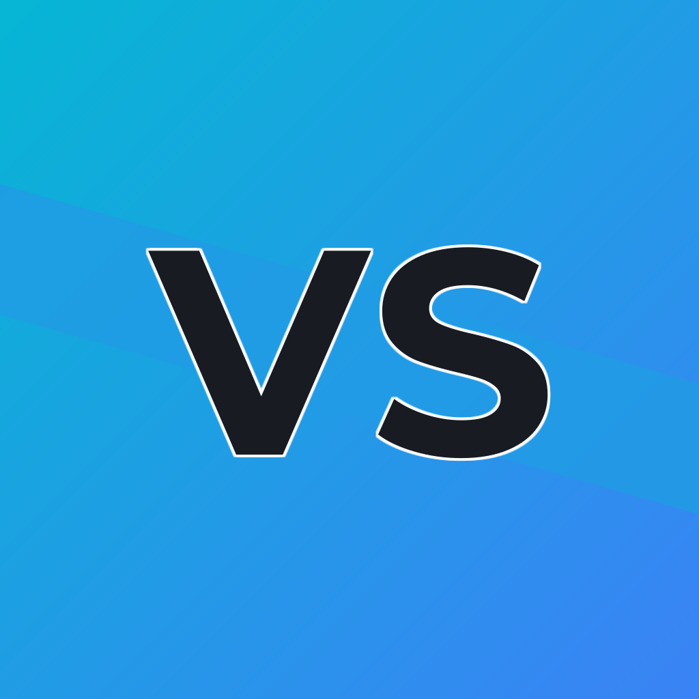

PEPSI
Es un gigante de alimentos y snacks. Casi la mitad de sus ingresos provienen de marcas de comida como Frito-Lay (Sabritas/Lay's), Quaker y Doritos.
Esto hace que PepsiCo facture casi el doble que Coca-Cola anualmente (aprox. $90 mil millones vs. $46 mil millones), aunque Coca-Cola suele ser más rentable por cada dólar invertido.
Tiene un sabor descrito como "picante" o con notas de vainilla, mayor carbonatación y niveles más altos de sodio.

COCA-COLA
Es una empresa de bebidas pura. Se enfoca exclusivamente en líquidos (refrescos, jugos, aguas, cafés). Su estrategia es dominar cada categoría de bebida en el mundo.
Tiene un sabor descrito como "picante" o con notas de vainilla, mayor carbonatación y niveles más altos de sodio.
BURGER KING
Su gran diferenciador es el cocinado a la llama. Esto le da a la carne un sabor ahumado único. Su lema "Have it your way" (Como tú quieras) permite mayor personalización, pero suele implicar tiempos de espera más largos.
Es el "troll" de la industria. Sus campañas suelen burlarse de McDonald's directamente. En 2026, han destacado por usar tecnología de geofencing para enviar cupones de descuento a los usuarios justo cuando pasan cerca de un McDonald's.
MCDONAL'S
Utilizan planchas de doble cara que sellan la carne en segundos. Su enfoque es la estandarización total: una Big Mac sabe exactamente igual en Tokio que en Buenos Aires. Es la victoria de la velocidad sobre el matiz del sabor.
Es "familiar" y "amigable". Se centra en el Happy Meal (Cajita Feliz) y en celebridades (como los menús de artistas famosos).
Elaborado por Jose Oviedo🌐